Yachimata, Chiba: things to do, food and stays
Yachimata · Chiba
Yachimata
Highlighted on the Chiba map.
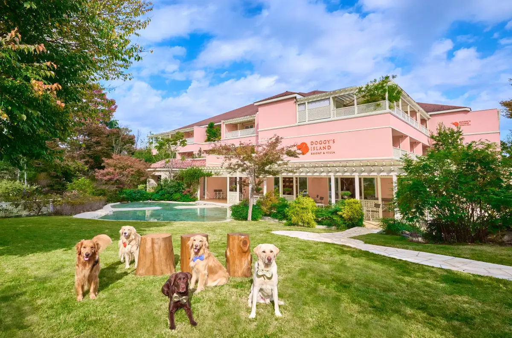
Stay
ADVENTURES ISLAND 小谷流沢ロッジ
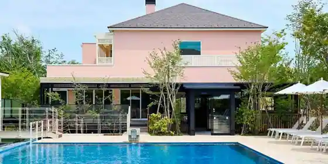
ADVENTURES ISLAND Kotani Ryu Sawa Lodge
Mountain lodge in Kotaniryu, Yachimata with family-friendly stays.
小谷流の里 ドギーズアイランド
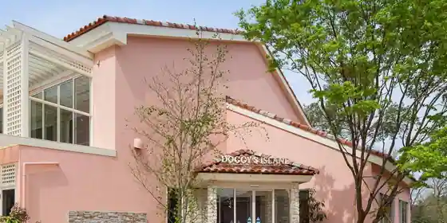
Kotani Ryu No Sato Dogizuairando
HOTEL R9 The Yard 八街
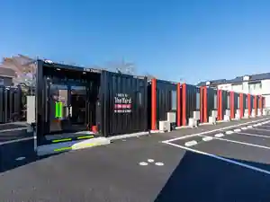
HOTEL R9 The Yard Yachimata
小谷流温泉 森の湯
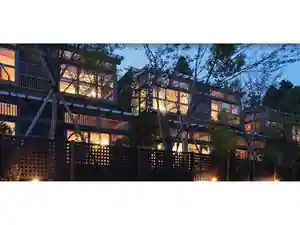
Kotani Ryu Onsen Mori No Yu
Inn at Kotaniryu Onsen in Kotaniryu, Yachimata.
Dining
元祖 肉玉そば 越智
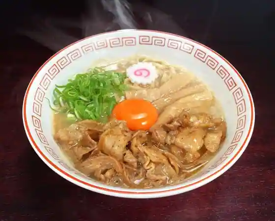
Ganso Nikudama Soba Ochi
Cafe ロビンソン
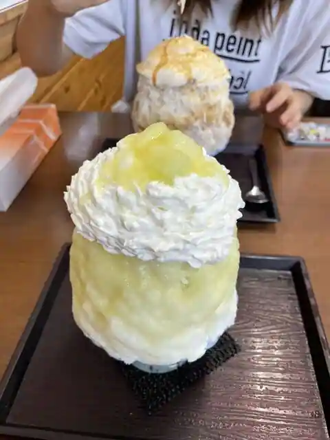
Cafe Robinson
平林のだんご
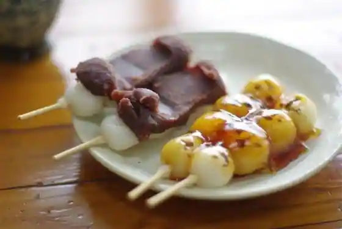
Hirabayashi Nodango
千葉バーディクラブ レストラン
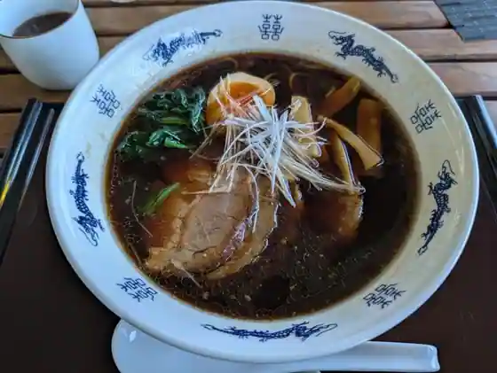
Chiba Badikurabu Restaurant
大衆肉料理 榎久
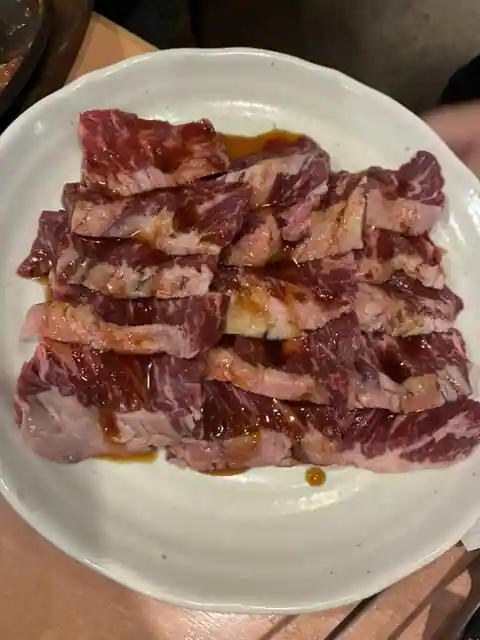
Taishu Nikuryori Enoki Kyu
麦匠
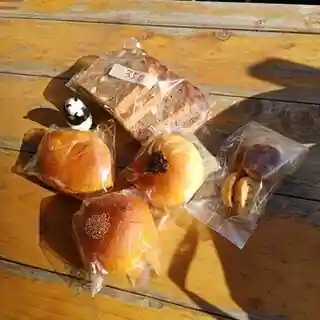
Mugi Takumi
小谷流ベーカリー&カフェ
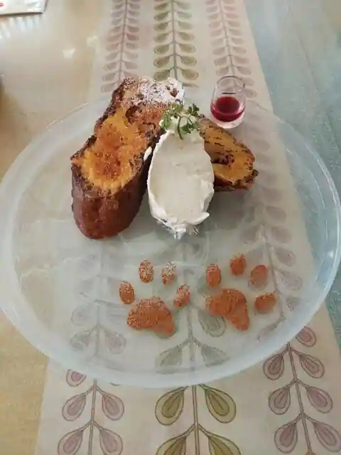
Kotani Ryu Bakery & Cafe
勢庵
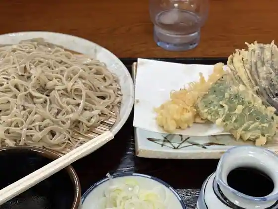
Sei Iori
支那そば うみ
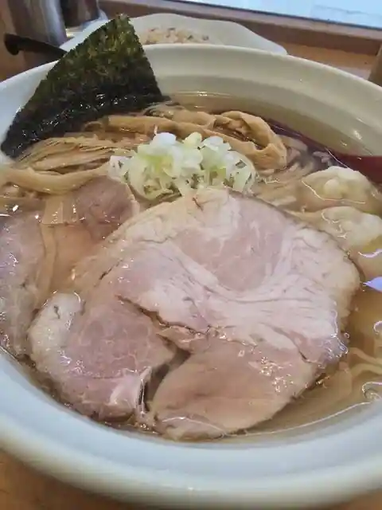
Shina Soba Umi
白井やきそば
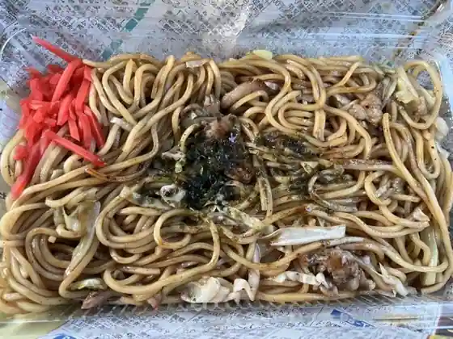
Shirai Yakisoba
マロニエ
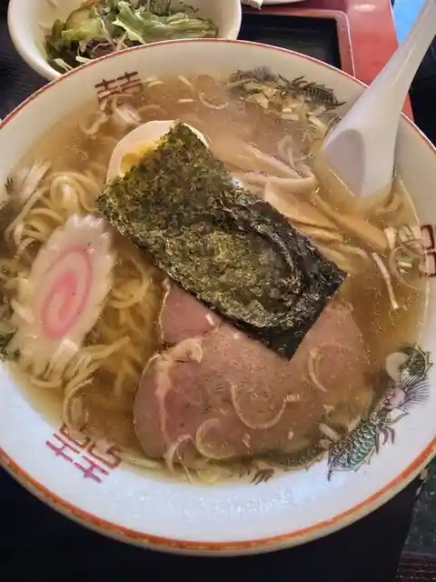
Maronie
グランプラス八街 工場直売所
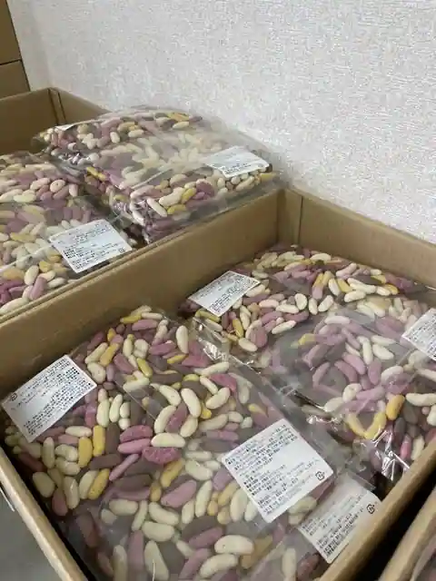
Guranpurasu Yachimata Kojo Chokubai Tokoro
South Breeze
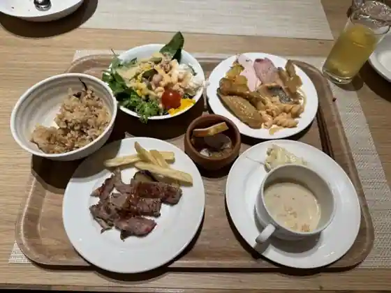
South Breeze
ピッツェリア・ダ・ヴェルデ
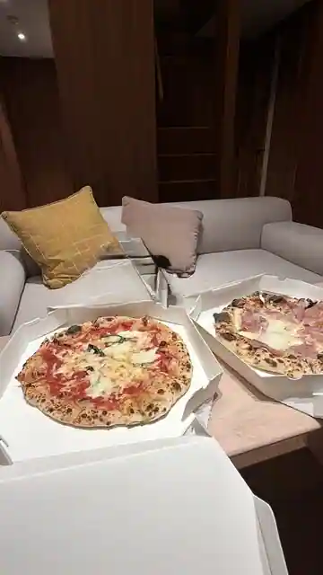
Pizzeria Da Verude
ラーメンあや 2号店
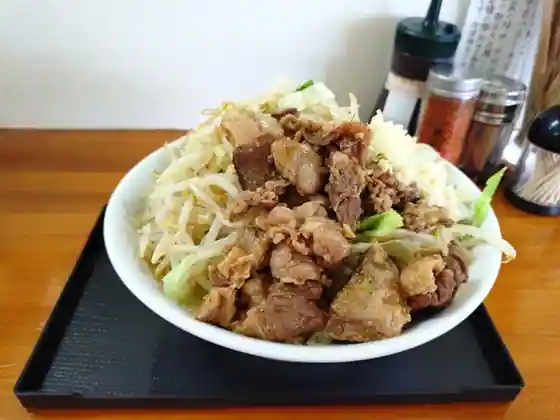
Ramen Aya 2 Go
三好野
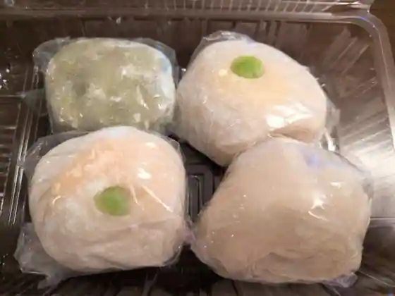
Miyoshi No
ラーメンショップ 八街店
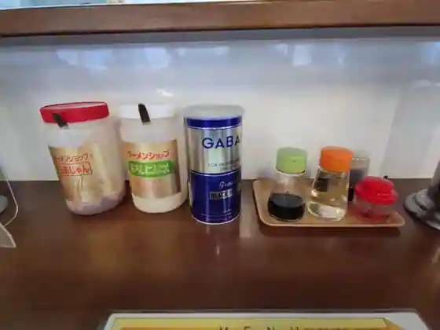
Ramen Shoppu Yachimata
リヨン小麦館八街店
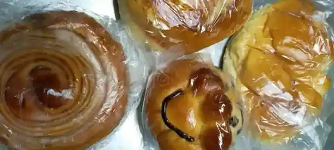
Riyon Komugi Kan Yachimata
高倉町珈琲 八街店
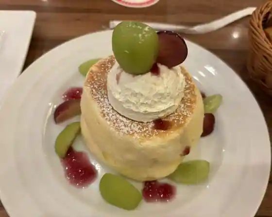
Takakura Machi Coffee Yachimata
風味絶佳 麺屋まるきた商店
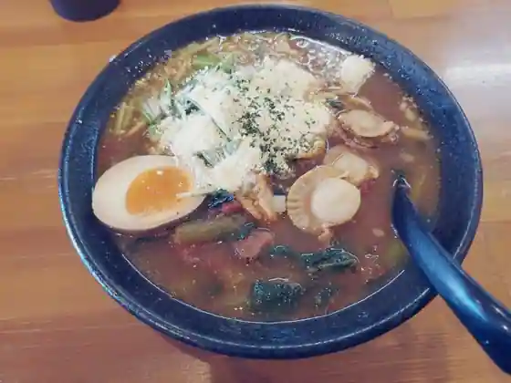
Fumi Zekka Men Ya Marukita Sho
ザ フォレスト テラス
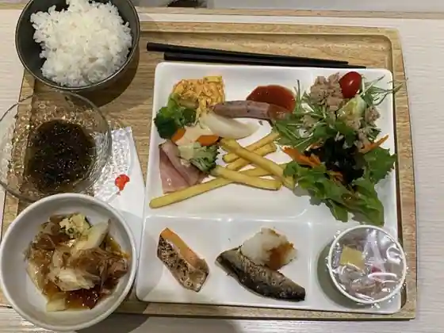
Za Foresuto Terrace
やぶ久
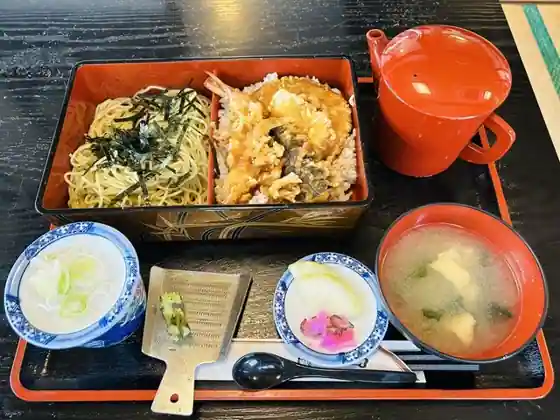
Yabu Kyu
小谷流ジェラートカフェ
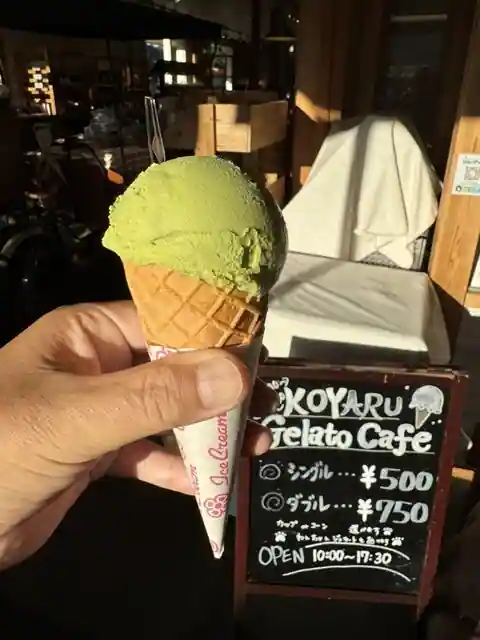
Kotani Ryu Jierato Cafe
竹三屋
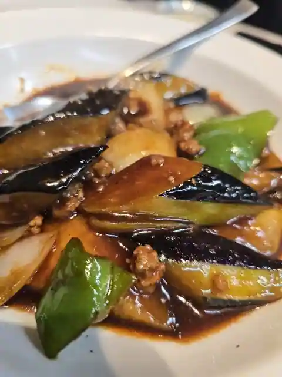
Take San Ya
Sights
Kotani Ryu Village Dogiizuai Land
Kotani Ryu Onsen Mori Baths
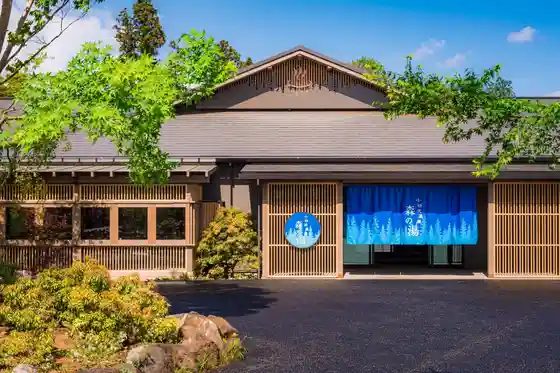
Ne Shaka
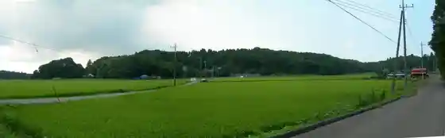
Sawa Wines
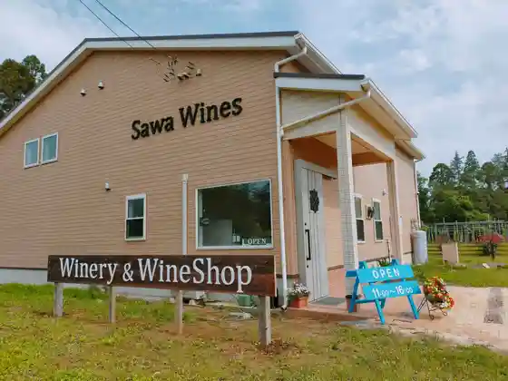
Rakkasei Tonya Fukuya Shoten
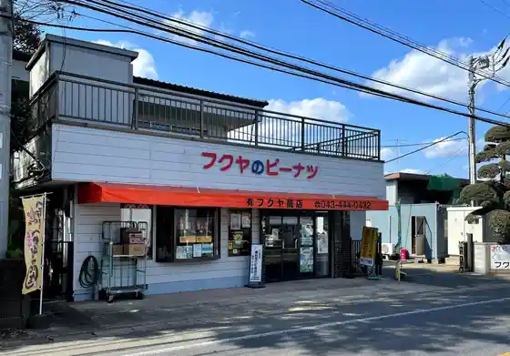
Yachimata Suisho no Mise Botchi
Tezukuri Piinattsubata no Senmonten YACHIMATA YOSHIKURA
Yachimata Local History Museum
Onari Kaidoato
Mori no Ichigo
Mame Tokoro Nama Katachi
Onari Kaidoato (Fukei Tani no Ken)
Masuda no Rakkasei
Ebisu Ichigo Sono
Onari Kaido no Ichiri Tsuka
Mawatari no Ken
Bindarai no Ike